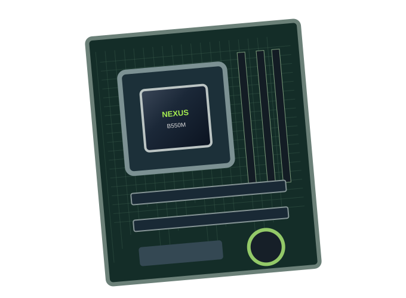

Início / Fichas técnicas / Placa-Mãe Matrix B550M

Componentes · Placas-mãe
Placa-Mãe Matrix B550M
Base para a montagem do computador, com slots de expansão e conectividade para o seu setup.
R$ 699,90 Preço fictício para demonstração
Estoque inicial ilustrativo: 7 unidades. Consulte a API para valores atuais.
Abrir demonstração interativaEspecificações técnicas de exemplo
- Formato: Micro ATX
- Slots para memória DDR4
- Slot M.2 para SSD
- Conexões USB e rede
Sobre esta loja
A NEXUS Hardware é um projeto acadêmico com HTML, CSS, JavaScript, API PHP e ferramentas MCP para estudo de encontrabilidade. Não realiza vendas, pagamentos ou entregas reais.